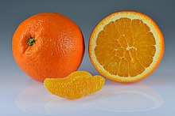
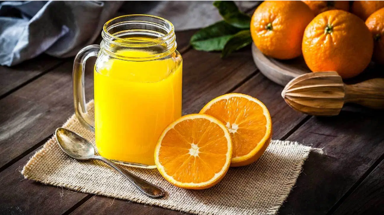
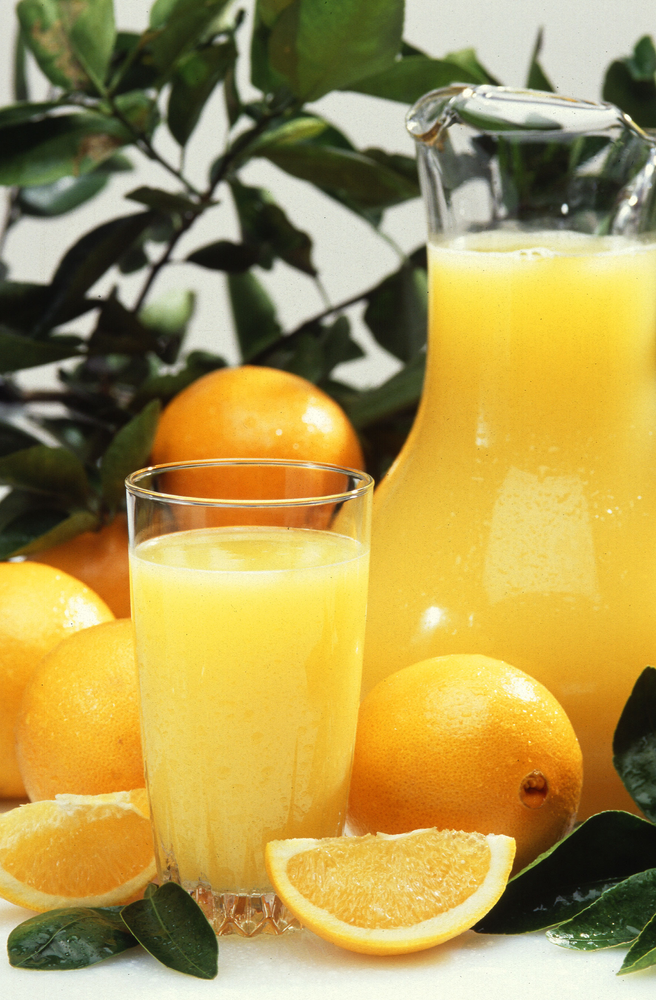

Orange

The orange is the fruit of various citrus species in the family Rutaceae (see list of plants known as orange); it primarily refers to Citrus × sinensis, which is also called sweet orange, to distinguish it from the related Citrus × aurantium, referred to as bitter orange. The sweet orange reproduces asexually (apomixis through nucellar embryony); varieties of sweet orange arise through mutations.
The orange is a hybrid between pomelo (Citrus maxima) and mandarin (Citrus reticulata). The chloroplast genome, and therefore the maternal line, is that of pomelo. The sweet orange has had its full genome sequenced.
The orange originated in a region encompassing Southern China, Northeast India, and Myanmar,and the earliest mention of the sweet orange was in Chinese literature in 314 BC. As of 1987, orange trees were found to be the most cultivated fruit tree in the world. Orange trees are widely grown in tropical and subtropical climates for their sweet fruit. The fruit of the orange tree can be eaten fresh, or processed for its juice or fragrant peel. As of 2012, sweet oranges accounted for approximately 70% of citrus production.
In 2017, 73 million tonnes of oranges were grown worldwide, with Brazil producing 24% of the world total, followed by China and India.[1]
Juice of Orange

Orange juice is the most popular fruit juice worldwide and has long been a breakfast staple.
Television commercials and marketing slogans portray this drink as unquestionably natural and healthy.
Yet, some scientists and health experts are concerned that this sweet beverage could harm your health.
This article looks at orange juice and whether it’s good or bad for you.
From the Orchard to Your Glass

Most store-bought types of orange juice aren’t made by simply squeezing fresh-picked oranges and pouring the juice into bottles or cartons.
Rather, they’re produced through a multi-step, rigorously controlled process, and the juice can be stored in large tanks for up to a year before packaging.
First, oranges are washed and squeezed by a machine. Pulp and oils are removed. The juice is heat-pasteurized to inactivate enzymes and kill microbes that could otherwise cause deterioration and spoilage (1Trusted Source, 2Trusted Source, 3Trusted Source).
Next, some of the oxygen is removed, which helps reduce oxidative damage to vitamin C during storage. Juice to be stored as frozen concentrate is evaporated to remove most of the water (4).
Unfortunately, these processes also remove compounds that provide aroma and flavor. Some of them are later added back to the juice from carefully blended flavor packs (5).
Finally, before packaging, juice from oranges harvested at different times may be mixed to help minimize variations in quality. Pulp, which undergoes further processing after extraction, is added back to some juices (1Trusted Source).
Are Some Types Healthier?
The healthiest type of orange juice is the kind you fresh-squeeze at home — but that can be time-consuming. Therefore, many people opt to buy orange juice from the supermarket.
The least healthy options are orange-flavored drinks that contain only a small percentage of real juice, along with several additives like high-fructose corn syrup and yellow food coloring.
A healthier choice is 100% orange juice — whether it’s made from frozen orange juice concentrate or never frozen. These two options are similar in nutritional value and taste (12, 13Trusted Source).
Stores also sell orange juice with added calcium, vitamin D and other nutrients. However, due to its high calorie count, you shouldn’t drink it just for these added nutrients. Instead, taking a supplement pill is a calorie-free way to fill in any dietary gaps (14Trusted Source).
If you’re watching your calorie intake, you can buy orange juice beverages that promote 50% fewer calories and less sugar than regular orange juice.
However, these drinks contain added water and sugar substitutes — either natural ones, such as stevia, or artificial ones, including sucralose and acesulfame potassium, which you may prefer to avoid. If included, these will be listed in the ingredients list.
Finally, you can choose how much pulp you want in your orange juice. Extra pulp doesn’t add enough fiber to change the count on the nutrition label compared to pulpless juice, but it does supply beneficial plant compounds, including flavonoids (13Trusted Source, 15).
Source:
1.https://en.wikipedia.org/wiki/Orange_(fruit)
2.https://www.healthline.com/nutrition/orange-juice#juice-vs-fruit
All Comment